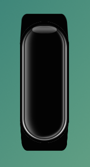
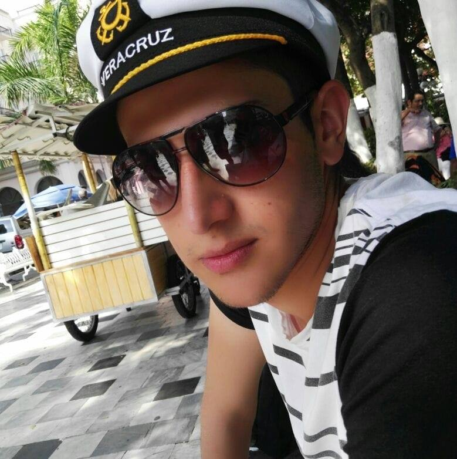
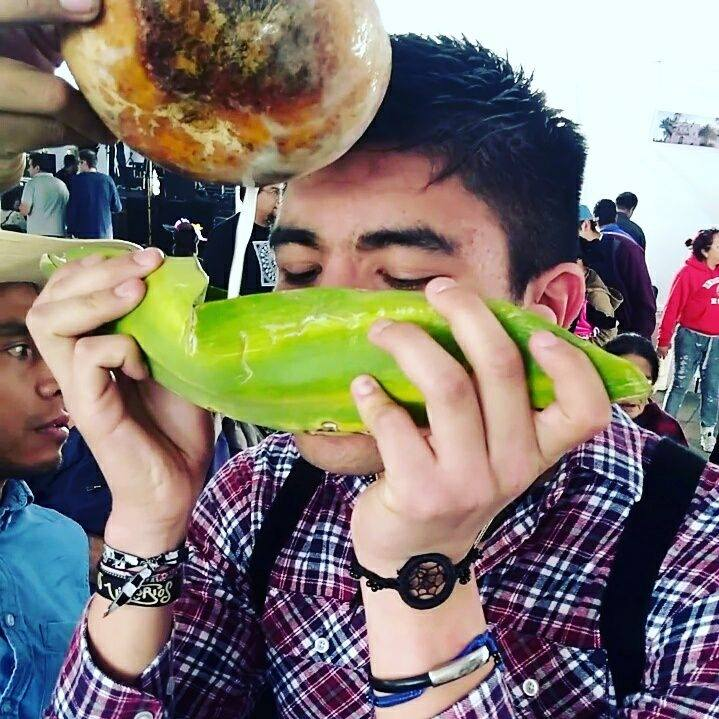
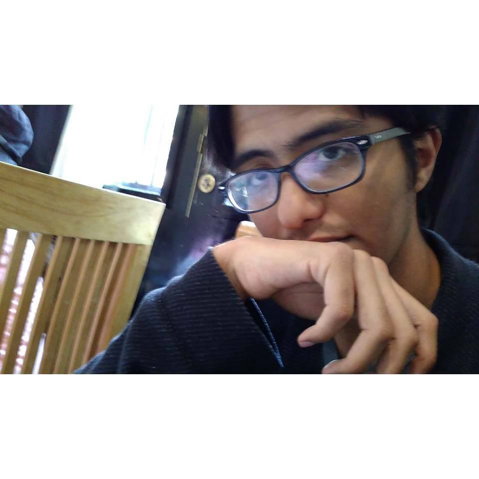

Brazalete contra el acoso sexual
(Concepto artístico)
Miembros del #EquipoPapalotl
|  |  |  | ||
|---|---|---|---|---|
|
Alejandro Buendía @alexbeesc03 |
Benjamín Cordova @benjmncc |
Ulises Gama @ulissrgez |
Hector Lucario @astorre_lucario |
André Pozos @andreandyp |
Al menos 61,883 unidades
TMAR = 16.32% ≈ 17%